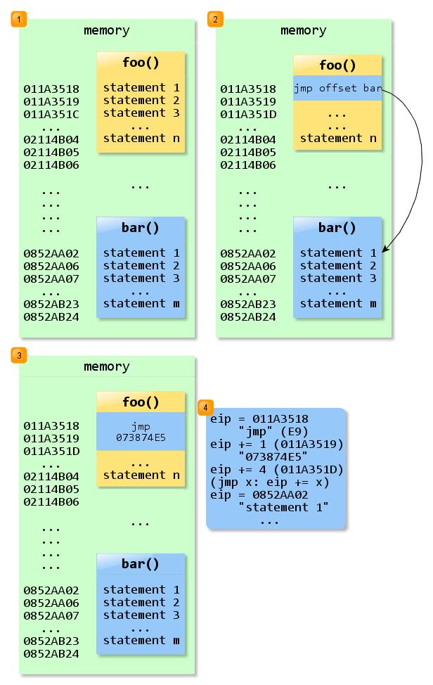
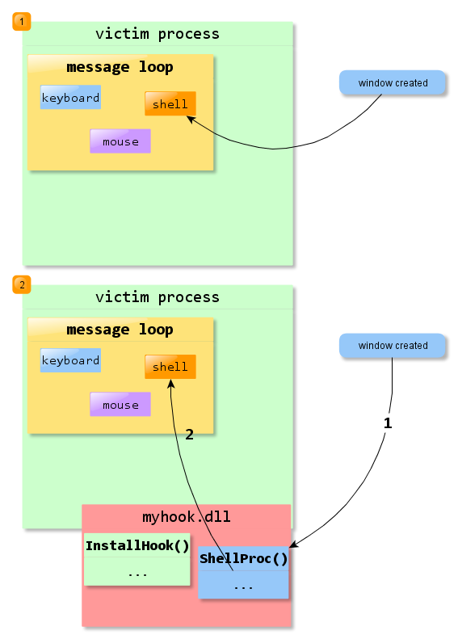

Table of Contents
Function Hooking and Windows Dll Injection
In this tutorial I'll show you how to modify at runtime the behavior of Windows programs.
Function Hot Patching
Problem: we have a function, foo() and we want bar() to be called instead.
Solutions:
- modify the code, replace
foo()withbar(), doh!. Works when the source is available. - write a library that exports a function with the same signature as
foo(), which internally callsbar(). On Unix based systems use theLD_PRELOADtrick1) to load the library before any other. On Windows, either place your library in theSystem32folder (it must have the same name as the one exportingfoo()) or do the registry hack2) to have it load instead. Iffoo()isn't available through a shared library, you're out of luck.
Here's a better solution: modify foo() at runtime by writing your code inside it!
So simply take the code from bar() and write it on top of foo() with memmove()-like logic. If bar() is significantly larger than foo() then we might run into trouble by overwriting code residing in memory “after” foo(). To avoid this unwanted effect, we'd have to “move” everything “after” foo() to larger addresses, so that bar() fits without overwriting anything. This is bad because multiple calls from outside to the code that is shifted in the memory will break. We'd also have to patch those calls and jumps, update them with the newer, bigger addresses, ending up with a tremendous amount of work.
Thankfully there's an easier hack through means of the unconditional jump - jmp distance to destination. It works in the following way:
x : jmp dword ptr [y - (x + 5)] x + 5: ....................................... y : etc
At first the Instruction Pointer is at offset x and execution goes through the jump, next it's going to be at offset y, running whatever lies there. The operand to this form of jmp is a 32 bit offset, a distance between the “landing point” and the “jump point”. It can be negative.
So we might run into less trouble by writing jmp distance between bar and (foo + 5) immediately after the entry point of foo().
Basic Hot Patch Example
- hotpatch.cpp
#include <windows.h> #include <cstdio> using namespace std; const unsigned char OP_JMP = 0xE9; // 32 bit relative jmp const SIZE_T SIZE_PATCH = 5; // jmp dword ptr distance; 1 byte + 4 bytes typedef void (*MyProc)(); void SimpleFunction1() { printf("foo\n"); } void SimpleFunction2() { printf("bar\n"); } int main() { PBYTE foo = reinterpret_cast<PBYTE>(SimpleFunction1); PBYTE bar = reinterpret_cast<PBYTE>(SimpleFunction2); DWORD oldProtection; // make sure the bytes of the function are writable // by default they are only readable and executable BOOL res = VirtualProtect(foo, SIZE_PATCH, PAGE_EXECUTE_READWRITE, &oldProtection); if (!res) return 1; // be mindful of pointer arithmetic // works with PBYTE, won't with PDWORD DWORD distanceToNewFoo = bar - foo - SIZE_PATCH; *foo = OP_JMP; *reinterpret_cast<PDWORD>(foo + 1) = distanceToNewFoo; // called though the pointer instead of foo() // to make sure the compiler won't inline or do some other stupid stuff reinterpret_cast<MyProc>(foo)(); // will print "bar\n" return 0; }
An important thing to have in mind here, is that the conversion between function pointer and void * (PVOID, PBYTE, etc) is illegal in both C and C++3), even though it works in Visual C and in GCC. For Linux check mprotect() instead of VirtualProtect().
The following image is an attempt at showing a map of the code from hotpatch.cpp. Keep in mind that the memory addresses from the left side are fictional.

{kind=link}
foo()is02114B05 - 011A3518 = 00F715EDbytes long, fits anunsigned char[16193005].bar()is0852AB24 - 0852AA02 = 00000122bytes long, fits anunsigned char[290].- the idea is to inject an unconditional jump at the beginning of
foo(), jump that will land at the first instruction ofbar(). - notice the distance between the expected “current” instruction within
foo()at address011A351Dand the “landing zone” inbar(), address0852AA02. We're talking about0852AA02 - 011A351D = 073874E5bytes across. - the
E9jump receives an immediate operand; that means the operand is within the code and the whole thing eats up 5 bytes, 1 for the opcode and 4 for the operand. That's why the execution jumps from011A351Dand not directly from the beginning offoo(), at011A3518.
As an observation, both statement n and statement m are far rets, opcode = CB. For the example in the picture, the program would write E9, E5, 74, 38, 07 just at the beginning of foo().
E9is the opcode for farjmp. A farjmpreceives an immediate 32 bit argument.E5,74,38,07represent - due to endianness - the number073874E5, the argument.
As a rule, it's better to make sure the new function matches the old one in both calling convention and return value + arguments.
Dll Injection
Now why would I go through the lengths of such useless (but fun) trickery? I won't answer in this section, but it's required to fully grasp what will follow. Under the Windows operating system, dll injection refers to executing foreign code in a different process. Ever wondered how applications such as Fraps4) or RivaTuner5) / MSI Aterburner6) manage to display a framerate counter on top of the currently running, full screen and exclusive mode D3D / OpenGL application? Or how, something like Sockscap7) manages to redirect an application's traffic through the given proxy? Read on.
While the above applications take advantage of dll injection, keep in mind that the “global hotkeys” functionality from programs such as foobar20008) or AutoHotkey9) are implemented by means of a “cousin” method - via low level keyboard hooks.
This is how one would run their code in a “parasited” process10):
- with SetWindowsHookEx(). Installing global hooks, from dlls defining them, is dll injection at work. It's an OK method, explained here.
- with CreateRemoteThread(LoadLibrary()). This is the true dll injection.
- with WriteProcessMemory(OurThreadProc); CreateRemoteThread(OurThreadProc). This is so much in the true spirit of dll injection, that it's not even dll injection anymore, it's directly code injection!
Here's the recipe for setting up a global Windows hook and getting your code into victim process:
- think of a suitable criteria; for example when a window gets created. That type of event is called a
shell eventand it's hookable via SetWindowsHookEx(WH_SHELL, ShellProc) - write
myhook.dllthat defines and exports the aboveShellProc(), see some steps below. For convenience, also export something likeInstallHook()from that dll, and within the code add the call toSetWindowsHookEx(). - write a “launcher” program, that will call once the
InstallHook()function defined in our dll and then just wait (if it unloads, probably Windows will also unload the dll, unless special measures are taken, resulting in crashes) ShellProc()will get called by the system everytime the specific event - a shell event in our case - is to be received by the application. Its code will run in that application's address space!
Watch the following picture if you don't believe: 
{kind=link}
- normally, an event is dispatched to the message loop of the receiving thread, and the message loop further sends that message within the thread to a “proper” handler
myhook.dllregisters, system-wide,ShellProc()as an interceptor of shell events (out of whichWM_CREATE). Now the message goes through the code fromShellProc()and only after processing it's (not even necessary, only because I'm too kind) forwarded to the shell handler in the original event loop.
A Practical Example
I like playing my games in windowed mode. Inspired by Media Player Classic Homecinema's11) borderless always on top window mode, I thought to myself how cool would it be to have any game's window borderless and always on top of the other windows. A game's window usually contains either WS_CAPTION or WS_THICKFRAME window styles. Making it borderless is a simple matter of retrieving its style (GetWindowLong(GWL_STYLE)), removing (toggling), by means of XOR, the relevant style and then applying the result on the window handle SetWindowLong(GWL_STYLE).
Removing The Window Decorations
As a first attempt I created a simple one-shot console application that targeted the Heroes of Newerth window, removing the WS_CAPTION style, as reported by Spy++.

- Borderless1.cpp
#include <cstdio> using namespace std; #include <windows.h> int main() { bool done = false; // finish when 'q' is entered while (!done) { HWND hwnd = FindWindow(NULL, TEXT("Heroes of Newerth")); if (NULL != hwnd) { LONG styles = GetWindowLong(hwnd, GWL_STYLE); if (0 != styles) { styles ^= WS_CAPTION; LONG result = SetWindowLong(hwnd, GWL_STYLE, styles); } } char c; scanf("%c", &c); if ('q' == c) done = true; } return 0; }

You can observe 2 problems in the current approach:
- the window is now blurry
- the mouse hover effect is registered a few pixels off
The blurriness problem happens because after removing the decorations (titlebar, dialog borders), Windows tries to maintain the program window within the same bounding rectangle. In doing so, it “inflates” the client area by a few pixels in each direction, pixels obtained from removing said decorations. Indeed, counting the pixels from the first picture, we get a total window area (including borders) of 1616×858 and a client area (only the Direct3D part from within the borders where the application draws its updates) of 1600×820 pixels. For the second picture, we have a window area equal to the client area (no more borders) of 1606×848 pixels. Since Heroes of Newerth has a dialog frame (non-sizeable), it doesn't treat WM_SIZE messages; the Direct3D context keeps rendering at the initial config file resolution and the resulting frame buffer gets drawn, with stretching, on top of a sligthly different window area so we don't have a perfect ”(logical )pixel-on-(screen )pixel” mapping anymore.
Note my config file for the game:
//snip SetSave "vid_resolution" "1600,820" //snip
Here's a fix for keeping the client area of the window in place during the style change:
- Borderless2.cpp
#include <cstdio> using namespace std; #include <windows.h> int main() { bool done = false; while (!done) { HWND hwnd = FindWindow(NULL, TEXT("Heroes of Newerth")); if (NULL != hwnd) { LONG styles = GetWindowLong(hwnd, GWL_STYLE); if (0 != styles) { styles ^= WS_CAPTION; bool deflate = 0 == (styles & WS_CAPTION); RECT rc; GetWindowRect(hwnd, &rc); int captionHeight = GetSystemMetrics(SM_CYCAPTION); int borderWidth = GetSystemMetrics(SM_CXDLGFRAME); int borderHeight = GetSystemMetrics(SM_CYDLGFRAME); if (deflate) { rc.left += borderWidth; rc.right -= borderWidth; rc.top += captionHeight + borderHeight; rc.bottom -= borderHeight; } else { rc.left -= borderWidth; rc.right += borderWidth; rc.top -= captionHeight + borderHeight; rc.bottom += borderHeight; } LONG result = SetWindowLong(hwnd, GWL_STYLE, styles); if (0 != result) SetWindowPos(hwnd, NULL, rc.left, rc.top, rc.right - rc.left, rc.bottom - rc.top, SWP_FRAMECHANGED); } } char c; scanf("%c", &c); if ('q' == c) done = true; } return 0; }
A process such as Starcraft 2 owns a window with the WS_THICKFRAME style denoting a sizing border. If I change the code to remove that style from the Starcraft 2 main window (also SM_C?THICKFRAME instead of SM_C?DLGFRAME, I can only notice the mouse hover effect being off - the game catches WM_SIZE messages and adjusts the framebuffer accordingly.
Fixing The Mouse Behavior
For the broken mouse hover effect it's time to put The Injection to use! Among the usual suspects for this problem are the window rectangle functions GetWindowRect() and GetClientRect(). It would make sense, due to the fact that games usually obtain mouse events through DirectInput, that initially mouse coordinates are expressed in desktop-absolute form, and not relative to the application window. Therefore they'd have to employ, in one form or another a conversion between screen (absolute) coordinates and window coordinates in a similar manner to the operation of ClientToScreen().
Let's take a look at an application window and the Get?Rect() logic relating to it:

What the game does when handling mouse input is obtain some absolute screen coordinates from DirectInput, convert them to window coordinates, then compensate for the window title and borders and then figure out what to do next with the event. Note that after removing the window decorations, both GetWindowRect() and GetClientRect() return the same coordinates. Then the game compensates by subtracting the expected widths and heights of borders, resulting in slightly off readings for the events. The idea here is to modify at run-time GetWindowRect() so that it returns the old rectangle, with titlebar and borders, as if the window style still contained those elements.
The basic workflow for detouring GetWindowRect() is:
- insert exactly at the beginning of the function a
jmpto ourGetWindowRect(); hot patch it - in our
GetWindowRect()restore the code of the original function - call the original function and save the result
- modify that result so that it fits our agenda
- hot patch
GetWindowRect()again - return the now modified result
32 Bit Versus 64 Bit
Special care should be taken when moving to x86-64.
Hot Patching
While the previous approach for hot patching a function (via relative jmp) is generally OK even in 64 bit mode, there could be rare occasions when the distance between the patched function and the original one can't be expressed on only 32 bits. Since the specific form of jmp used expects a 32 bit displacement, it would be useless in this case.
The suggested solution here is a 64 bit absolute jump, which comes by default with x86-6412). The idea here is just slightly different than in the case of plain x86. While jmp accepted there as argument an immediate displacement, the x86-64 long jump functions through an indirect register. So we'd simply load the destination address (not a “distance” any more for this instruction) into a register and pass that register as the operand to the jmp. Fortunately, x86-64 states that the special 64-bit registries r10 and r11 aren't preserved between call opcodes, so picking r11 is a safe bet and guaranteed not to ruin the program flow.
Dll Injection
One can't insert an image compiled for 32 bits inside a 64 bit process and can't inject a 64 bit dll inside a 32 bit process. The idea is to have 2 separate programs making the dll injection, 2 versions of the dll, each of them for 64 bits and, respectively, for 32 bits. The 32 bit injector should set up the hooks as usual and launch a light weight version of itself that only sets up the hook and waits for an end event.
Loader:
TCHAR path[MAX_PATH]; DWORD len = GetModuleFileName(NULL, path, MAX_PATH); while (path[len - 1] != '\\') --len; MoveMemory(path + len, TEXT("Deframe64.dat"), sizeof(TCHAR) * (lstrlen(TEXT("Deframe64.dat")) + 1)); STARTUPINFO siDeframe64 = {sizeof(STARTUPINFO)}; PROCESS_INFORMATION piDeframe64; BOOL bRes = CreateProcess(0, path, NULL, NULL, TRUE, 0, NULL, NULL, &siDeframe64, &piDeframe64); if (bRes) WaitForInputIdle(piDeframe64.hProcess, INFINITE); InstallHook();
- Deframe64.cpp
#include <windows.h> #include "DeframeHelper.h" int WINAPI WinMain(HINSTANCE hInstance, HINSTANCE hPrevInstance, LPSTR lpCmdLine, int nCmdShow) { InstallHook(); // main message loop: MSG msg; while (GetMessage(&msg, NULL, 0, 0) && WM_QUIT != msg.message) { TranslateMessage(&msg); DispatchMessage(&msg); } RemoveHook(); return static_cast<int>(msg.wParam); }
The first fragment of code, residing in the normal 32 bit “injector” process first spawns a 64 bit child, our “Deframe64.dat”. They both perform the same main function at this stage - calling InstallHook() which is exported by the “guest” dll. I've messed with the output of Deframe64 so that it has the extension .dat; this is only an aesthetic step so that the user doesn't accidentally launch the useless and with no means of terminating 64 bit process. On 32 bit systems CreateProcess() will fail and I simply ignore everything involving it.
Here's how the 32 bit injector terminates the 64 bit one:
if (bRes) ::PostThreadMessage(piDeframe64.dwThreadId, WM_QUIT, 0, 0);

Download
All the required code can be found here. Note that the project files won't work with the Express version of Visual Studio, due to the main program - Deframe being written with MFC.
For a binary build, see this archive.
The solution uses a C-like approach for the Injection. The workflow is:
- start Deframe.exe
- start the program of interest (Diablo III in the example)
- open that program's system menu (either left click on the small icon on the top left of the window or shift + right click on the program in the taskbar)
- select either of the 2 available options
On toporNo borders

A C++ Template Library (for the impatient)
This code is not for the faint of heart, C++ 2003 (talking about Microsoft Visual C 2010 here, variadic template support) template code to simplify the hotpatching. Include it and use it as exemplified further below (it's not included in the source download).
- HotPatch.hpp
#pragma once #include <windows.h> // HotPatch is a thin wrapper on top of the function hot patching layer. // It encapsulates a way to replace known functions with own functions by means of patching in jmps in both x86 and x86-64. // The basic workflow is: // 1. Declare HotPatch::function<ftype> thePatch; assign target to this object with thePatch = target // 2. set a replacement callback with thePatch.SetPatch(myTarget) // 3. call thePatch.Apply() to replace the target with the other callback // In the replacement procedure: // 3.1. do your stuff // 3.2. call thePatch(arguments) // 3.3. do other stuff // When done: // 4. restore the opcodes with thePatch.RemovePatch() // 5. the destructor or assigning a new function to thePatch will restore the protection status of the memory referred by target // Limitations: // won't work with variadic functions (blame C) namespace HotPatch { class Exception { }; class MemoryException : public Exception { }; class PatchException : public Exception { }; template <typename FType> class function_impl { public: function_impl() : _pFun(NULL), _pPatch(NULL), _detoured(false) { } ~function_impl() { _RestoreProtection(); } // res = function_impl<FType>::IsPatched() tells whether a call to the target will run the target or the hook. // Return value: // bool res - true if ApplyPatch() has been called without an accompanying RemovePatch(). bool IsPatched() { return _detoured; } // function_impl<FType>::operator=(pFun) directs the patch to a target and prepares the target memory for writes. // Parameters: // FType *pFun - the function to patch (see Apply()). // Throws: // MemoryException - when changing the protection of the page where pFun points is impossible. void operator=(FType *pFun) { _RestoreProtection(); _pFun = pFun; if (NULL == _pFun) return; BOOL res = VirtualProtect(_pFun, _64bit ? _PATCH_LENGTH64 : _PATCH_LENGTH32, PAGE_EXECUTE_READWRITE, &_oldProtection); if (!res) throw MemoryException(); } // function_impl<FType>::SetPatch(patch[, alwaysUse32Bit]) prepares internal state for the patch. // Parameters: // FType *patch - the patch to use instead of pFun (see operator=(FType *)). // bool alwaysUse32Bit - If true, a 32 bit jmp is always inserted. // Else, the best jmp is determined based on necessities (can still be 32 bit if it fits). // Throws: // PatchException - if patch is NULL. void SetPatch(FType *patch, bool alwaysUse32Bit = false) { if (NULL == patch) throw PatchException(); if (NULL != _pPatch) RemovePatch(); _pPatch = patch; _64bit = !alwaysUse32Bit; // they haven't expressed mandatory 32 bit only path; try to guess the best path if (_64bit) { LONGLONG jumpDistance = reinterpret_cast<LONGLONG>(_pPatch) - reinterpret_cast<LONGLONG>(_pFun) - _PATCH_LENGTH32; if (abs(jumpDistance) > 0x7FFFFFFF) // the jump is too long to fit a regular 32 bit relative jmp _64bit = true; else _64bit = false; } // save the old patch opcodes // plain old for is faster; DO NOT call any library functions! for (SIZE_T i = 0; i < (_64bit ? _PATCH_LENGTH64 : _PATCH_LENGTH32); ++i) *(_backup + i) = *(reinterpret_cast<PBYTE>(_pFun) + i); } // function_impl<FType>::ApplyPatch() makes pFun (see operator=(FType *)) jmp to patch (see SetPatch(FType *, bool)). // This is the actual hot patch mechanism at work. void ApplyPatch() { if (_64bit) { // movabs *reinterpret_cast<PBYTE>(_pFun) = _OP_MOVABS; // r11 *(reinterpret_cast<PBYTE>(_pFun) + 1) = _R11_WRITE; // _detourProc *reinterpret_cast<PLONGLONG>(reinterpret_cast<PBYTE>(_pFun) + 2) = reinterpret_cast<LONGLONG>(_pPatch); // jmp *reinterpret_cast<PWORD>(reinterpret_cast<PBYTE>(_pFun) + 10) = _OP_JMP64; // abs r11 *(reinterpret_cast<PBYTE>(_pFun) + 12) = _R11_JMP; } else { // jmp *reinterpret_cast<PBYTE>(_pFun) = _OP_JMP32; // distance left to _detourProc *reinterpret_cast<PDWORD>(reinterpret_cast<PBYTE>(_pFun) + 1) = static_cast<DWORD>( reinterpret_cast<PBYTE>(_pPatch) - reinterpret_cast<PBYTE>(_pFun) - static_cast<DWORD>(_PATCH_LENGTH32)); } _detoured = true; } // function_impl<FType>::RemovePatch() undoes what ApplyPatch() did. pFun (see operator=(FType *)) will be its old self again. void RemovePatch() { // plain old for is faster; DO NOT call any library functions! for (SIZE_T i = 0; i < (_64bit ? _PATCH_LENGTH64 : _PATCH_LENGTH32); ++i) *(reinterpret_cast<PBYTE>(_pFun) + i) = *(_backup + i); _detoured = false; } protected: FType *_pFun; FType *_pPatch; bool _64bit; bool _detoured; BYTE _backup[13]; DWORD _oldProtection; static const BYTE _OP_JMP32 = 0xE9; static const WORD _OP_JMP64 = 0xFF41; static const BYTE _OP_MOVABS = 0x49; static const BYTE _R11_WRITE = 0xBB; static const BYTE _R11_JMP = 0xE3; static const SIZE_T _PATCH_LENGTH32 = 5; // jmp, detourProc - originalProc = 1 + 4 static const SIZE_T _PATCH_LENGTH64 = 13; // movabs, R11, detourProc (64 bit), jmp (abs, 64), R11 = 1 + 1 + 8 + 2 + 1 template <typename T> static T abs(T val) { return val > 0 ? val : -val; } void _RestoreProtection() { if (NULL == _pFun) return; DWORD unusedOldProtection; BOOL res = VirtualProtect(_pFun, _64bit ? _PATCH_LENGTH64 : _PATCH_LENGTH32, _oldProtection, &unusedOldProtection); (void) res; // nothing to do } template <typename FType> class _NativeCallGuard { public: _NativeCallGuard(function_impl<FType> &fun) : _fun(fun) { _fun.RemovePatch(); } ~_NativeCallGuard() { _fun.ApplyPatch(); } private: function_impl<FType> &_fun; }; }; template <typename> class function; #define HP_TARG0 #define HP_TARG1 , typename Arg1 #define HP_TARG2 HP_TARG1, typename Arg2 #define HP_TARG3 HP_TARG2, typename Arg3 #define HP_TARG4 HP_TARG3, typename Arg4 #define HP_TARG5 HP_TARG4, typename Arg5 #define HP_TARG6 HP_TARG5, typename Arg6 #define HP_TARG7 HP_TARG6, typename Arg7 #define HP_TARG8 HP_TARG7, typename Arg8 #define HP_TARG9 HP_TARG8, typename Arg9 #define HP_TARG10 HP_TARG9, typename Arg10 #define HP_FARG0 #define HP_FARG1 Arg1 #define HP_FARG2 HP_FARG1, Arg2 #define HP_FARG3 HP_FARG2, Arg3 #define HP_FARG4 HP_FARG3, Arg4 #define HP_FARG5 HP_FARG4, Arg5 #define HP_FARG6 HP_FARG5, Arg6 #define HP_FARG7 HP_FARG6, Arg7 #define HP_FARG8 HP_FARG7, Arg8 #define HP_FARG9 HP_FARG8, Arg9 #define HP_FARG10 HP_FARG9, Arg10 #define HP_ARG0 #define HP_ARG1 arg1 #define HP_ARG2 HP_ARG1, arg2 #define HP_ARG3 HP_ARG2, arg3 #define HP_ARG4 HP_ARG3, arg4 #define HP_ARG5 HP_ARG4, arg5 #define HP_ARG6 HP_ARG5, arg6 #define HP_ARG7 HP_ARG6, arg7 #define HP_ARG8 HP_ARG7, arg8 #define HP_ARG9 HP_ARG8, arg9 #define HP_ARG10 HP_ARG9, arg10 #define HP_ARG_DECL0 #define HP_ARG_DECL1 Arg1 arg1 #define HP_ARG_DECL2 HP_ARG_DECL1, Arg2 arg2 #define HP_ARG_DECL3 HP_ARG_DECL2, Arg3 arg3 #define HP_ARG_DECL4 HP_ARG_DECL3, Arg4 arg4 #define HP_ARG_DECL5 HP_ARG_DECL4, Arg5 arg5 #define HP_ARG_DECL6 HP_ARG_DECL5, Arg6 arg6 #define HP_ARG_DECL7 HP_ARG_DECL6, Arg7 arg7 #define HP_ARG_DECL8 HP_ARG_DECL7, Arg8 arg8 #define HP_ARG_DECL9 HP_ARG_DECL8, Arg9 arg9 #define HP_ARG_DECL10 HP_ARG_DECL9, Arg10 arg10 // template partial specialization for function<return_type([arg_types])> #define HP_RET_FUNCTION(n, callconv)\ template <typename _Ret HP_TARG##n>\ class function<_Ret callconv(HP_FARG##n)> : public function_impl<_Ret callconv(HP_FARG##n)>\ {\ private:\ typedef _Ret callconv type(HP_FARG##n);\ \ public:\ ~function<type>()\ {\ _RestoreProtection();\ }\ \ using function_impl<type>::operator=;\ \ _Ret operator()(HP_ARG_DECL##n)\ {\ _NativeCallGuard<type> CallGuard(*this);\ return (*_pFun)(HP_ARG##n);\ }\ \ protected:\ using function_impl<type>::_pFun;\ } // declare the 11 templates handling functions in the form: // _Ret function() // _Ret function(Arg1) // _Ret function(Arg1, Arg2) // ... // _Ret function(Arg1, Arg2, ... Arg10) HP_RET_FUNCTION(0, __cdecl); HP_RET_FUNCTION(1, __cdecl); HP_RET_FUNCTION(2, __cdecl); HP_RET_FUNCTION(3, __cdecl); HP_RET_FUNCTION(4, __cdecl); HP_RET_FUNCTION(5, __cdecl); HP_RET_FUNCTION(6, __cdecl); HP_RET_FUNCTION(7, __cdecl); HP_RET_FUNCTION(8, __cdecl); HP_RET_FUNCTION(9, __cdecl); HP_RET_FUNCTION(10, __cdecl); #ifndef _M_X64 HP_RET_FUNCTION(0, __stdcall); HP_RET_FUNCTION(1, __stdcall); HP_RET_FUNCTION(2, __stdcall); HP_RET_FUNCTION(3, __stdcall); HP_RET_FUNCTION(4, __stdcall); HP_RET_FUNCTION(5, __stdcall); HP_RET_FUNCTION(6, __stdcall); HP_RET_FUNCTION(7, __stdcall); HP_RET_FUNCTION(8, __stdcall); HP_RET_FUNCTION(9, __stdcall); HP_RET_FUNCTION(10, __stdcall); #endif } // namespace HotPatch
What I'm doing above, is generating 11 partial tempate specializations for class HotPatch::function. The class is inspired by C++2011's std::function. It's a class that models functions with up to 10 (included) arguments - you can see the declarations through the HP_RET_FUNCTION macro calls in there. Then, another set of 11 declarations for x86-64 where only calling convention __cdecl exists. Do not worry abut understanding the above code; it's ugly and it sucks. Focus on the usage instead, it gets things done (for up to 10 arguments that is).
To use this HotPatch mini-lib, write something like:
- HotPatchTest.cpp
#include <cstdio> #include "HotPatch.hpp" using namespace std; using namespace HotPatch; function<void()> fooPatch; void foo() { printf("In foo()\n"); } void bar() { printf("I'm hackin ur function\n"); if (fooPatch.IsPatched()) fooPatch(); } int main() { void (*pfoo)() = foo; void (*pbar)() = bar; pfoo(); // calls foo() pbar(); // calls bar() fooPatch = foo; fooPatch.SetPatch(bar); fooPatch.ApplyPatch(); pfoo(); // calls bar() pbar(); // calls bar() fooPatch.RemovePatch(); pfoo(); // calls foo() pbar(); // calls bar() return 0; }
Casting pointers to class functions to ''void *''
In C++ it's illegal even thinking of casting member functions to void *. Here's a rather shady workaround, taking advantage of some unsafe C mechanics. It will work with GCC circa 4.5 on Linux or OS X and with CL 10 Service Pack 1 on x86 and x86-64:
- Method.cpp
#include <cstdio> #include <cstdarg> using namespace std; class Base { public: Base(int a) : _a(a) { } int Foo(int offset) { return offset + _a * _a; } private: int _a; }; void *DisMember(size_t size, ...) { // the pointer can be more complicated than a plain data pointer // think of virtual member functions, multiple inheritance, etc if (size < sizeof(void *)) return NULL; va_list args; va_start(args, size); void *res = va_arg(args, void *); va_end(args); return res; } int main() { Base b(5); Base c(8); // regular pointer to member function int (Base::*ptrFoo)(int); ptrFoo = &Base::Foo; printf("Calling Base::Foo(3) through the regular pointer gives %d.\n", (b.*ptrFoo)(3)); // void *pVoid1 = reinterpret_cast<void *>(ptrFoo); // won't work // void *pVoid2 = reinterpret_cast<void *>(&(b.*ptrFoo)); // won't work printf("sizeof(&Base::Foo) = %ld.\n", sizeof(&Base::Foo)); void *pVoid3 = DisMember(sizeof(&Base::Foo), &Base::Foo); printf("%p.\n", pVoid3); printf("Calling Foo from the void* through b: %d.\n", reinterpret_cast<int (*)(Base *, int)>(pVoid3)(&b, 3)); // printf("Calling Foo from the void* through c: %d.\n", reinterpret_cast<int (Base::*)(int)>(pVoid3)(3)); // won't work; gotta stick with the illegal form from above printf("Calling Foo from the void* through c: %d.\n", reinterpret_cast<int (*)(Base *, int)>(pVoid3)(&c, 3)); return 0; }
Further Info and Support
I'm usually idling on irc.freenode.net on #rosedu. Just ask and me or the other people around will direct you.